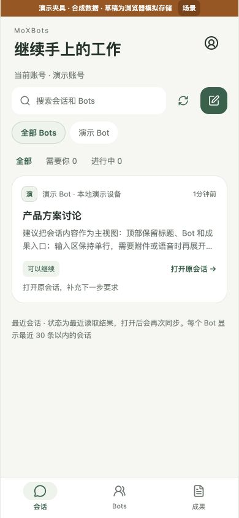
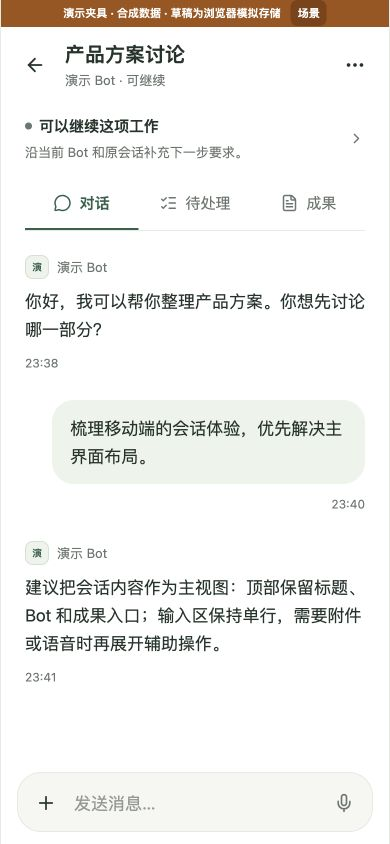
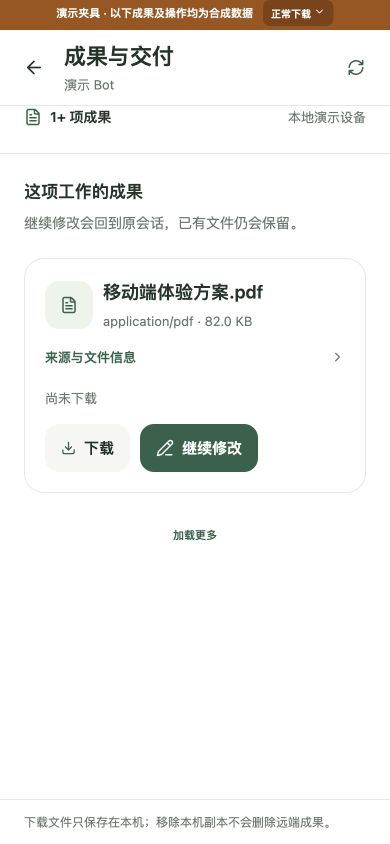

<!doctype html><html lang="zh-CN"><meta charset="utf-8"><meta name="viewport" content="width=device-width,initial-scale=1"><title>MoXBots 手机界面视觉对照</title><style>*{box-sizing:border-box}body{margin:0;background:#f3f5f0;color:#24332b;font-family:system-ui,-apple-system,sans-serif;padding:32px}header{max-width:1200px;margin:0 auto 24px}h1{font-size:28px;margin:0 0 10px;font-weight:600}p{font-size:15px;line-height:1.6;color:#64716a;margin:0}main{max-width:1200px;margin:auto;display:grid;grid-template-columns:repeat(4,minmax(0,1fr));gap:24px}h2{font-size:17px;margin:0 0 12px;font-weight:600}img{display:block;width:100%;border-radius:18px;box-shadow:0 8px 28px #24332b0d;border:1px solid #e1e5de}a{color:#35624b;text-decoration:none}footer{max-width:1200px;margin:24px auto;font-size:14px;color:#64716a}@media(max-width:850px){main{grid-template-columns:repeat(2,minmax(0,1fr))}}@media(max-width:480px){body{padding:20px}main{grid-template-columns:1fr}}</style><header><h1>让任务更突出，让界面舒展开</h1><p>原页面与本轮实际组件对照 · 合成演示数据 · 尚未打包安装到手机</p></header><main><section><h2>调整前 · 首页</h2><a href="evidence/before-home.png"></a></section><section><h2>调整后 · 继续任务</h2><a href="evidence/after-home-390.png"></a></section><section><h2>调整后 · 原会话</h2><a href="evidence/after-conversation-390.png"></a></section><section><h2>调整后 · 成果</h2><a href="evidence/after-artifacts-390.png"></a></section></main><footer>任务标题与正文加大 · 降低碎片边框 · 主要操作更明确 · 原草稿、审批和成果路径保留　<a href="http://127.0.0.1:18827/">打开本机交互演示 →</a></footer></html>